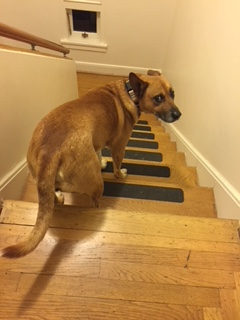
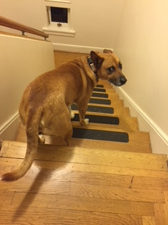

I have two dogs, who are the love of my life, one german shepherd and
pittbul mix, the other is a basengi mix.
 


I LOVE brownies, lemon bars, and creme brulee.
I love traveling too, and I've have the amazing opportunity to travel outside of the U.S to Costa Rica, the British Virgin Islands, Mexico, Iceland, the Bahamas, Paris, and London.
In my free time, you can find me reading, drawing, or listening to jazz and soul oldies.